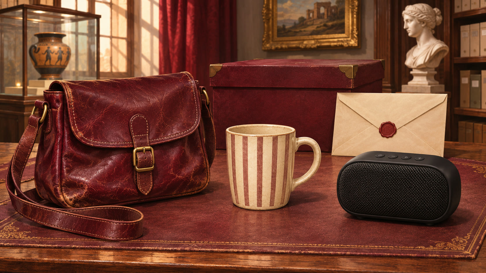

Units 1–2 · A story quest
The Missing
Story
Ten clues. One exhibition to rescue.
Bring your English back, one discovery at a time.
No timer. Hints welcome. Your progress stays in this browser.

Answers are saved on this device. Use “Save answers” for a copy.